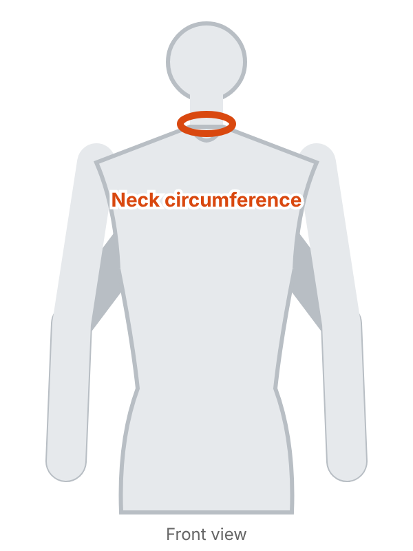
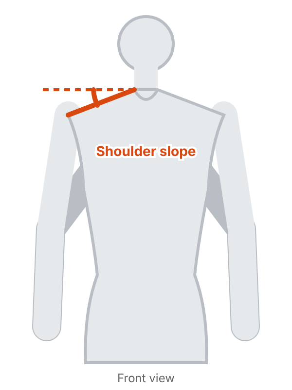
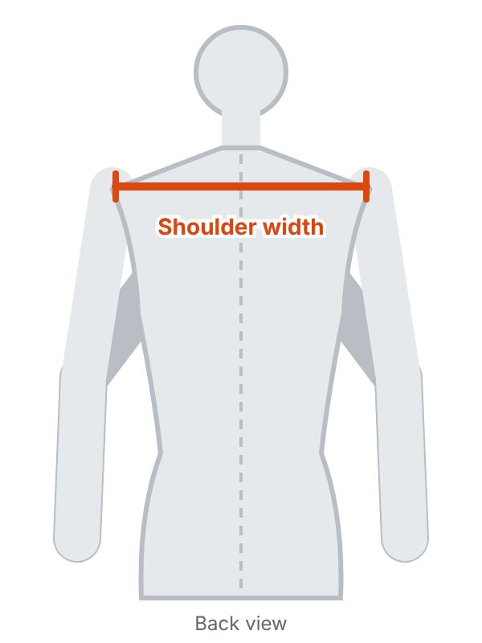
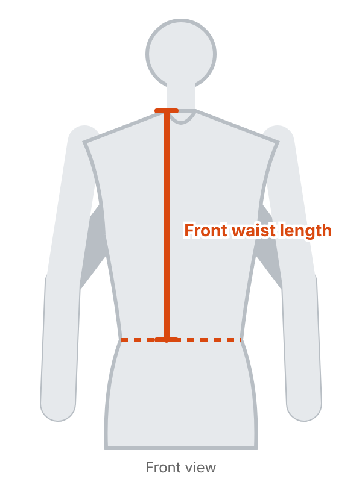
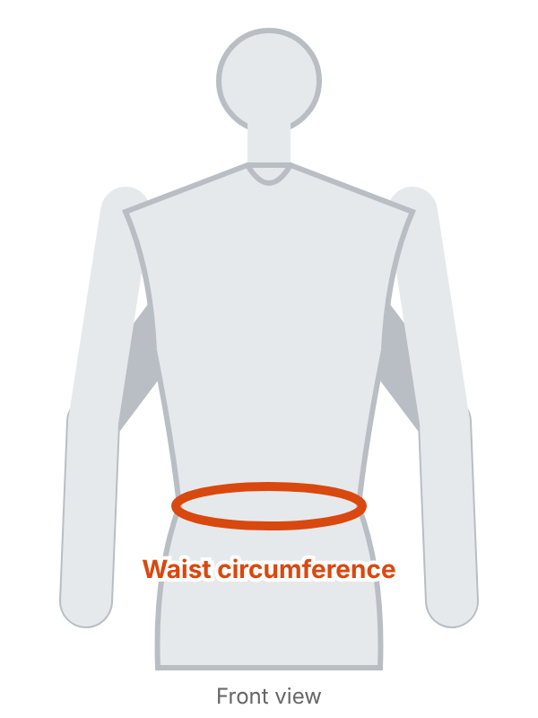
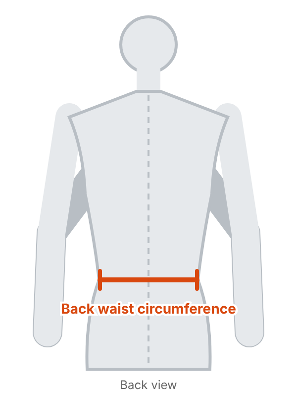
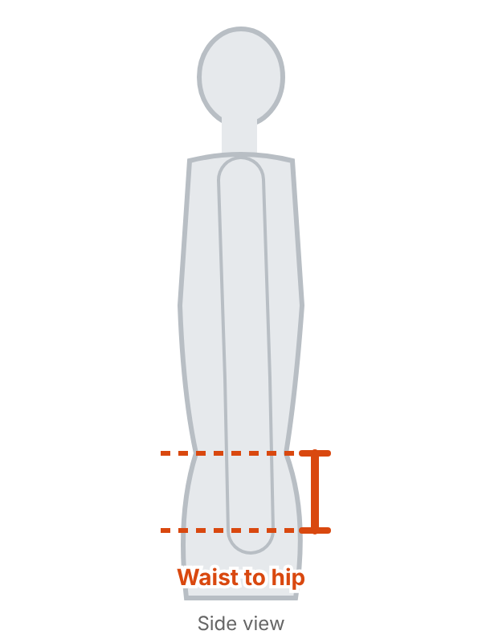
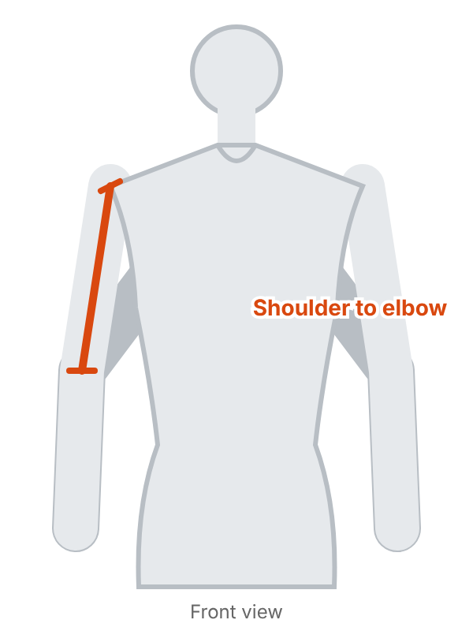
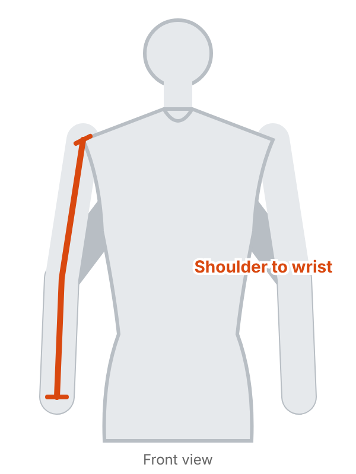
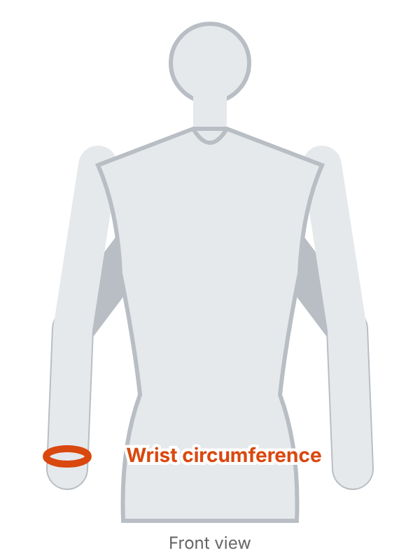

Ten measurements are enough. Take them on the body, in underwear or very light clothing, with the tape measure flat against the body, without pulling it tight.
How to take your measurements

Neck circumference : At the base of the neck, with a soft tape laid flat, not tight.

Shoulder slope : Angle between the horizontal and the shoulder line, from the neck to the shoulder tip. The easiest way: have a photo taken from the front, arms by your sides, then measure the angle on the photo with a protractor. Precision is not critical.

Shoulder width : Across the back, from one shoulder tip to the other (where the shoulder meets the arm).

Front waist length : On the front, from the top of the shoulder, at the base of the neck, down to the waist.

Waist circumference : At the narrowest point of the waist, not tight.

Back waist circumference : Across the back, from one side to the other at waist height, with a tape measure.

Waist to hip : On the side, the vertical distance between the waist line and the hip line.

Shoulder to elbow : From the shoulder tip to the elbow, arm slightly bent.

Shoulder to wrist : From the shoulder tip to the wrist, passing through the elbow, arm slightly bent.

Wrist circumference : Around the wrist, not tight.